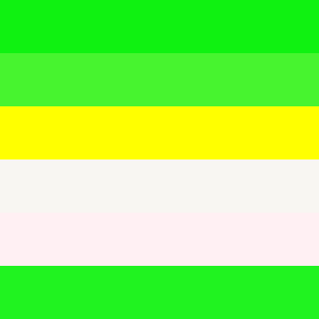
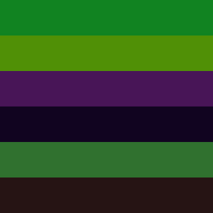
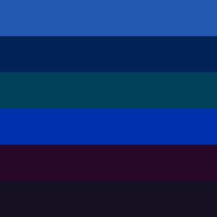
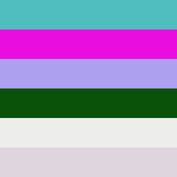
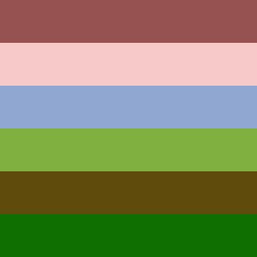
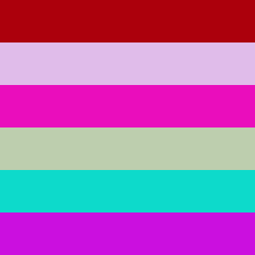

Solution: Colors
Answer: SILVER
Written by Jon Schneider, Anderson Wang, and Dai Yang
If we try converting some of the colors to their hex values, we can see some patterns in many images. For example, the second image only uses the digits 0-9, and the last one is almost all letters A-F with some 0s thrown in. It turns out that each of the images, when converted to a 6x6 grid of hex characters, forms its own minipuzzle. Figuring out the rules of the puzzle allows you to fill in 6 missing hex digits from each grid, which have always been replaced by 0s. We now explain each of the mini-puzzles in order.

Hex color grid:
| 0 | F | F | 2 | 1 | 1 |
| 4 | 7 | F | 4 | 2 | F |
| F | F | F | F | 0 | 0 |
| F | 8 | F | 6 | F | 2 |
| F | F | F | 0 | F | 3 |
| 2 | 0 | F | 3 | 2 | 0 |
This grid contains several digits and a bunch of Fs. It turns out that this represents a minesweeper board, where Fs represent mines and digits give the number of mines in the up to 8 adjacent cells. We can use simple minesweeper logic to determine the values in the zeroed-out squares:
| F | F | F | 2 | 1 | 1 |
| 4 | 7 | F | 4 | 2 | F |
| F | F | F | F | 3 | 2 |
| F | 8 | F | 6 | F | 2 |
| F | F | F | 5 | F | 3 |
| 2 | 4 | F | 3 | 2 | F |

Hex color grid:
| 1 | 1 | 8 | 4 | 2 | 1 |
| 5 | 0 | 9 | 0 | 0 | 7 |
| 4 | 8 | 1 | 5 | 5 | 6 |
| 1 | 1 | 0 | 4 | 2 | 1 |
| 3 | 0 | 7 | 1 | 3 | 0 |
| 2 | 6 | 1 | 3 | 1 | 4 |
For this grid, each digit is equal to the absolute value of the difference of the two digits above it. Some potential observations that help with figuring this out include the fact that many digits seem to be equal to the sum of nearby digits, and in particular it looks like the 2nd row is the sum of the 1st and 3rd rows. We can replace the six 0s with the correct digits to satisfy this condition:
| 1 | 1 | 8 | 4 | 2 | 1 |
| 5 | 9 | 9 | 9 | 7 | 7 |
| 4 | 8 | 1 | 5 | 5 | 6 |
| 1 | 1 | 8 | 4 | 2 | 1 |
| 3 | 7 | 7 | 1 | 3 | 5 |
| 2 | 6 | 1 | 3 | 1 | 4 |

Hex color grid:
| 2 | 3 | 5 | 7 | B | 0 |
| 0 | 1 | 2 | 3 | 5 | 8 |
| 0 | 1 | 4 | 1 | 5 | 9 |
| 0 | 1 | 3 | 0 | A | F |
| 2 | 7 | 0 | 8 | 2 | 8 |
| 1 | 4 | 1 | 0 | 2 | 1 |
In this puzzle, each row represents either a famous mathematical sequence or the digits of a mathematical constant: from top to bottom, they are prime numbers (note that B=11 in hex), Fibonacci numbers, digits of pi, triangular numbers, digits of e, and digits of the square root of 2. We can fill in the zeroed-out characters in each sequence as follows:
| 2 | 3 | 5 | 7 | B | D |
| 1 | 1 | 2 | 3 | 5 | 8 |
| 3 | 1 | 4 | 1 | 5 | 9 |
| 0 | 1 | 3 | 6 | A | F |
| 2 | 7 | 1 | 8 | 2 | 8 |
| 1 | 4 | 1 | 4 | 2 | 1 |

Hex color grid:
| 5 | 0 | B | E | B | E |
| E | A | 0 | D | E | 0 |
| A | C | A | 0 | E | F |
| 0 | A | 5 | 1 | 0 | A |
| E | D | E | E | E | C |
| D | E | D | 5 | D | E |
In this grid, reading down each column gives an English word with one letter missing, where 1 and 5 represent I and S respectively. The words are SEABED, FACADE, BIASED, EDDIES, BEEFED, and EFFACE.
| 5 | F | B | E | B | E |
| E | A | 1 | D | E | F |
| A | C | A | D | E | F |
| B | A | 5 | 1 | F | A |
| E | D | E | E | E | C |
| D | E | D | 5 | D | E |

Hex color grid:
| 9 | 5 | 5 | 2 | 5 | 1 |
| F | 7 | C | A | C | 9 |
| 9 | 0 | A | 8 | D | 1 |
| 8 | 0 | B | 0 | 4 | 0 |
| 5 | F | 4 | B | 0 | B |
| 0 | F | 6 | F | 0 | 1 |
Unlike the other grids which clearly have strange character distributions, this one seems relatively normal. It turns out that colors in this grid actually represent colors: each row is the hex representation of a Pantone color of the year from 2015-2019 in that order. This can be found by googling the first two rows (which don't have 0s, so they cannot change) together.
| 9 | 5 | 5 | 2 | 5 | 1 |
| F | 7 | C | A | C | 9 |
| 9 | 2 | A | 8 | D | 1 |
| 8 | 8 | B | 0 | 4 | B |
| 5 | F | 4 | B | 8 | B |
| F | F | 6 | F | 6 | 1 |

Hex color grid:
| A | C | 0 | 0 | 0 | D |
| D | F | B | C | E | A |
| E | A | 0 | D | B | C |
| B | D | C | E | A | F |
| 0 | E | D | A | C | B |
| C | B | 0 | F | D | E |
Other than the 0s, this grid only has letters and no letter appears twice in any row or column, which lets us place the missing characters. In fact, this is actually a sudoku puzzle with 2x3 regions, though that's more of an easter egg and is certainly not needed to fill in the grid.
| A | C | E | B | F | D |
| D | F | B | C | E | A |
| E | A | F | D | B | C |
| B | D | C | E | A | F |
| F | E | D | A | C | B |
| C | B | A | F | D | E |
Over all 6 grids, none of the changed characters appears in the same position. This means that we can combine all of them into a single 6x6 grid:
| F | F | E | B | F | D |
| 1 | 9 | 1 | 9 | 7 | F |
| 3 | 2 | F | D | 3 | 2 |
| B | 8 | 8 | 6 | F | B |
| F | 7 | 1 | 5 | 8 | 5 |
| F | 4 | A | 4 | 6 | F |
At the same time, we can look at the six clues at the bottom. Perhaps with the help of some of the clearer associations (Ivy League University=brown, police=blue), we can determine that they all clue colors, and more specifically, X11 web colors.
| Clue | X11 color | Hex representation |
| A citrus-y piece of lettuce | Lime Green | 32CD32 |
| A communist that likes flowers, but only when they're sorta cooked | Medium Violet Red | C71585 |
| A grim, very expensive piece of fishing equipment | Dark Goldenrod | B8860B |
| An Ivy League University in the desert | Sandy Brown | F4A460 |
| The result of putting a nut in boiling water | Blanched Almond | FFEBCD |
| What you would call the police after dark | Midnight Blue | 191970 |
When written in hex, each of these colors is almost identical to one of the rows in the above grid, with one of its characters changed to an F (of course, they can't be replaced with 0s as before since no character in the final grid can be a 0).
| F | F | E | B | C | D |
| 1 | 9 | 1 | 9 | 7 | 0 |
| 3 | 2 | C | D | 3 | 2 |
| B | 8 | 8 | 6 | 0 | B |
| C | 7 | 1 | 5 | 8 | 5 |
| F | 4 | A | 4 | 6 | 0 |
(Note that these two steps can be done simultaneously, and one can help with the other. For example, knowing some of the hex digits in a color can help you find its name, and also knowing the names of the colors can help solve the puzzle without all of the subparts as long as you can guess the replaced digits)
For the final step, we take the hex digits that the Fs change to in row order: C0C0C0. This is the hex representation of SILVER.
Author’s Notes
Anderson: When we were trying to fill in the last couple puzzles in the weeks leading up to the hunt, I saw this idea that Dai submitted and had mostly gone overlooked, and thought it could work well (not to mention that one of the two remaining unassigned answers was a color!). Dai came up with most of the subpuzzle ideas in his original proposal (minesweeper, words, math constants/sequences), and we worked together with Jon to create the remaining ones. The X11 web colors step was also added to give us more flexibility in making the grids.
Some other unused ideas included an addition or multiplication problem (which we eventually decided was too hard to spot and was replaced with the more "local" subtraction), and the colors of the pride flag (we thought it would've fit perfectly in this puzzle, but unfortunately, we couldn't find a canonical set of hex codes and didn't want to arbitrarily use the picture on the Wikipedia article. This was eventually replaced by the Pantone colors.)